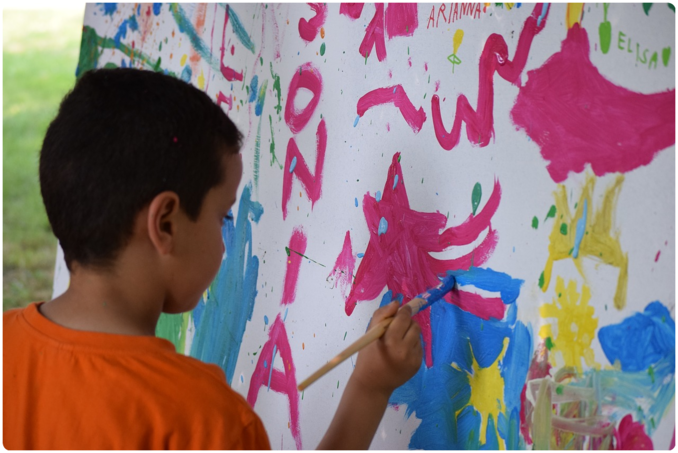

Pine Park Center Kids Kamp
Summer Program for Kids Aged 3-15 Years
About:
The Pine Park Center "Kids Kamp" is a week-long summer camp
offering a variety of programs in athletics, wilderness awareness,
and arts and humanities. Kampers are exposed to a wide-range of
indoor and outdoor activities, designed to strengthen group and
individual dynamics, skills, and interests.
Registration begins May 1.

A Kamper adds the finishing touches to his addition to a Kamp-wide mural.
Programs:
- Kommunity Kampfire
Evening "Kommunity Kampfires" encourage togetherness, group activities, and hands-on learning.
- Kamping Friday night
"Kamping" trips teach basic survivor skills, and provide an opportunity to unplug and explore nature.
- Katfish Swimming
The "Katfish" program offers lessons at our Center for three levels of swimmer, from beginner to advanced.
- The Kids Kamp Kickers (Also offered singularly)
A favorite among registrants, any Kamper may join a "Kids Kamp Kickers" soccer team. Try-outs held during the first practice.
- Konquerors
For the adventurer and explorer in every kid, "Konquerors" participate in novelty activities like orienteering or horseback riding. Offerings depend on season and instructor availability. Ages 10+.
- Krafts and Kultures
Kids Kamp brings in local talent to share their skills and knowledge with our bright young Kampers. Past instructors have included graffiti artist Avi and astronomer Dr. Jamal Warren.
Schedule
|
Monday |
Tuesday |
Wednesday |
Thursday |
Friday |
Saturday |
Sunday |
| Kampfires |
6PM-8PM |
6PM-8PM |
6PM-8PM |
6PM-8PM |
- |
- |
- |
| Kampers |
- |
- |
- |
- |
6PM-10PM |
- |
- |
| Katfishes |
1PM-4PM |
1PM-4PM |
1PM-4PM |
- |
- |
- |
- |
| Kickers |
10AM-12PM |
- |
10AM-12PM |
2PM-4PM |
- |
- |
- |
| Konquerors |
- |
- |
- |
- |
10AM-4PM |
- |
- |
| Krafts |
- |
10AM-12PM |
- |
10AM-1PM |
- |
- |
- |